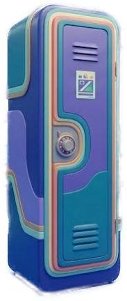

LOCKER_RESONANCE_PENDING
Maqueta CSS/SVG del efecto de resonancia. Es una capa independiente posicionada encima de la taquilla, sin spritesheet ni imagen raster generada.
- Colores:
#9ED300y#D41383. - El VFX vive en
.resonance-vfxy puede moverse/escalarse con CSS. - Las curvas son SVG, animadas con
stroke-dashoffset, pulso y parpadeo. - Para React, convertir el bloque SVG en componente y montar sobre
SceneMap.
anomaly green
anomaly magenta